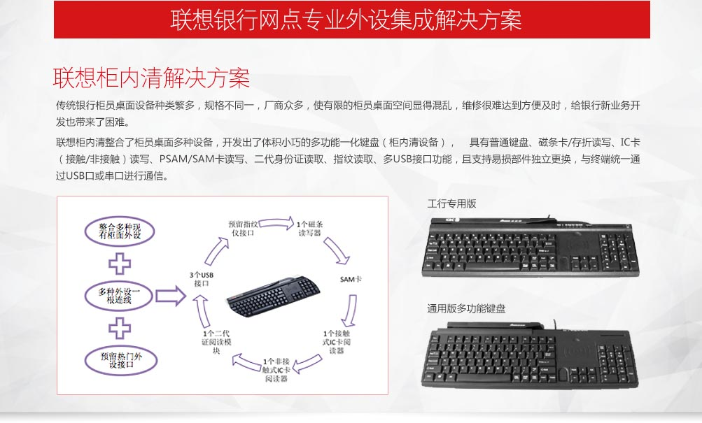

联想银行网点整体解决方案架构
联想银行网点解决方案以桌面虚拟化终端平台为核心，全面解决传统柜员终端的管理失控状态，虚拟化技术实现了桌面方案的分层管理，使桌面管理脱离了硬件规格，驱动的限制, 实现了桌面的数据安全和集中管理；整合优化柜员外设，柜内外设整合为柜内清多功能键盘，柜外交互评价设备整合升级为柜外清，同时实现多种设备间的信息交互；同过预填单系统客户自行录入用户信息和办理业务种类，同时获取排队号，优化了业务流程；前后台统一
通信系统为网点业务拓展提供了基础。
联想银行网点解决方案降低网点维护管
理成本和难度，提高柜员业务效率，增
强客户网点体验。
方案分为以下几大部分：
- 联想PC+银行柜员解决方案
－传统PC方案
－联想柜面系统虚拟化解决方案
- 联想银行网点专业外设集成解决方案
－柜内清解决方案
－柜面交互系统
- 数据中心平台虚拟化解决方杂
- 信用卡移动展业解决方案
联想PC+银行柜员解决方案
联想PC+银行解决方案分两部分
- 传统PC方案：包含传统的PC柜员方案和以嵌入式CPU和OS为核心的精简PC方案。
联想Thinkcentre M4250s是专为银行设计的PC终端，丰富的接口，带有1串+4可供电串口，并口，6USB口，强大的处理能力，稳定的质量，在银行柜面得到广泛的应用。
- 柜面系统虚拟化解决方案：联想柜面系统虚拟化解决方案包含VDI（Virtual Desktop Infrastructure）和IDV（Intel® ligence Desktop Virtualization）两种架构。
VDI架构是虚拟桌面和虚拟应用运行在数据中心的服务器上，桌面端一般以瘦客户机为访问设备，通过远程连接协议连接到所需的虚拟桌面； 优点是数据安全，访问灵活，强调管理性。
IDV架构中服务器负责管理虚拟桌面镜像和发布虚拟桌面管理策略， 虚拟机镜像下载到PC存储并在PC端运行，优点是良好的性能和使用体验，外设兼容性好，网络依赖低，不需要更改原的IT架构，部署成本地。

联想柜面交互系统
目前银行柜台外的交互设备一般有密码键盘，对讲器，评价器，柜员上岗牌等， 点钞信息一般是用户通过玻璃窗直接观察柜员桌面的点钞机显示的信息。 这些设备都是独立的系统，分别维护，联想柜面交互系统有集合上面所有功能，并增加了点钞机显示，信息交互、电子签名、手写输入、业务广告发布等功能，并为配合二代证留出了指纹读取、人像摄取等可扩展功能。
柜外清技术架构：
柜面交互设备参数：
- CPU： Samsung2416，主频 400MHz
- 内存：SDRAM 32MB
- FLASH 2G NANDFLASH
- 液晶屏： 7寸彩色液晶屏 ，分辨率800 * 480
- 触摸屏操作压力：20~150g
- 串口类型：提供2个串口，2个都支持RS232/TTL切换（内部开关切换）
- 通讯速率：波特率可调(版本控制)
- 加密方式：DES、3DES可选
- 对讲设备：内置喇叭、支持MIC输入
联想瘦客机ThinkCentre M2600c
联想 ThinkCentreM2600c 是联想推出的新一代瘦客户产品，采用 Intel® 最新架构ULV Celeron 807 处理器，在保持低功耗的情况下计算和显示性能比前Atom平台大幅提升，完美实现本地office处理和高清视频媒体播放。同时联想在此款产品设计上秉承联想ThinkCentre品牌标准，在设计规格上又有更严格要求，整机散热采用无风扇设计，内部结构采用一体化无连接线设计，采用DOM卡作为存储单元，操作系统采用嵌入式的WES2009，WES7及Linux系统，通过联想标准的严格测试，保证了联想全新瘦客户产品的质量和稳定性。
联想瘦客户具有非常高的可管理性，联想终端管理软件具有瘦客户镜像抓取和分发功能，远程设置终端，批量配置远程连接协议；联想ThinkCentre M2600c 兼容Citrix ICA/HDX ,Vmware View PCoIP,Microsoft RDP, remotFX协议。
联想瘦客户具有非常高的可管理性，联想终端管理软件具有瘦客户镜像抓取和分发功能，远程设置终端，批量配置远程连接协议；联想ThinkCentre M2600c 兼容Citrix ICA/HDX ,Vmware View PCoIP,Microsoft RDP, remotFX协议。
联想ThinkCentre M2600c 设计有4个可供电串口，支持多种规格供电和信号引脚定义，对目前国内柜台上使用的各种串口外设有非常好的兼容性。
联想ThinkCentre M2600c瘦客户机是桌面办公新方案，业务应用的新选择，是桌面虚拟化应用的最佳接入端。
- Intel最新一代ULV赛扬平台 ICP807 单核1.5GHz双线程
- 跟Atom N2800相比，计算性能提升70%，显示性能
提升250%
- 跟AMD Brazos E2-1800相比，计算性能提升60%
- 支持DOM卡
- 1G，4G，8G，16G
- 兼容Windows及Linux操作系统
- 联想定制化WES2009，WES7
- 联想定制化Linux操作系统
- 无线网络连接
- 802.11b/g/n
业务流程图
方案特点
联想平板电脑信用卡移动销售解决方案，为银行提供了崭新的信用卡营销模式。采用移动应用，让销售代表把信用卡产品，在平板电脑上以最佳的呈现方式介绍给客户。通过前后一体的业务流程，帮助银行以最快的速度受理客户申请，及时鉴别客户身份，防范潜在风险，锁定优质客户，创造前所未有的办卡体验。同时，把销售全过程纳入银行的整体管理体系，大幅提高营销命中率，杜绝无效申请，提升发卡效益。
- 数据安全
通过对设备、传输过程、用户管理、操作管理等环节进行加密、控制，保障申请数据在整个流程中的安全。
- 设备安全
使用专用定制设备，对硬件、底层系统进行了高安全级别的定制，即使设备丢失，他人也无法使用。
- 传输安全
采用虚拟专网方案，利用AAA服务器或者具备AAA功能的路由器实现二次认证，并在运营商与后台之间建立L2TP隧道，提高数据传输的安全性。
- 合法合规
业务流程的设计符合银监会《商业银行信用卡业务监督管理办法》规定的相关要求。
快速有效
- 通过前后一体的业务流程，大幅度提升申请处理的时效。
- 实时发布新的优惠商户和优惠信息，有力促进信用卡销
售。
- 整个申请过程高效透明，随时查询。
- 前后台一体的销售情况实时统计，业绩情况随时掌握。
- 每个销售人员的状态一目了然，工作安排及时准确，考
核快速有效。
- 有效控制伪冒申请、虚假申请，防止买卖表、串表、盗
取和伪造客户资料等行为。
- 规范申请数据的合规性和有效性，有效申请比例可达
90%以上。
-
灵活部署
联想信用卡展业系统，包括了硬件设备的管理和维护、终端业务系统、后台管理系统，以及BPO业务处理等完整的服务内容。采用随需模式，根据客户的需要，提供相应的服务规模和服务模块，解决了自建模式所面临的一系列问题。
-
高效管理
根据既定营销策略及主视觉形象，对信用卡新品特性、业务流程、申请表、销售系统人员考核办法等变量进行参数的配置，对新品进行定制化管理；销售团队组织结构清晰，精确定位销售人员所在地，销售过程及业绩电子化，易于即时统计，分析和维护，助您灵敏应对市场反应，为信用卡销售创造无限可能！
联想平板硬件配置
客户收益
- 前后一体的业务流程，大幅度提升申请处理的时效。
- 实时发布新的优惠商户和优惠信息，有力促进信用卡销售。
- 整个申请过程高效透明，随时查询。
- 前后台一体的销售情况实时统计，业绩情况随时掌握。
- 销售人员状态一目了然，工作安排及时准确，考核快速有效。
- 有效控制伪冒、虚假申请及到去客户资料、假造客户资料等行为。
- 规范申请数据的合规性和有效性，有效申请比例可达90%以上。